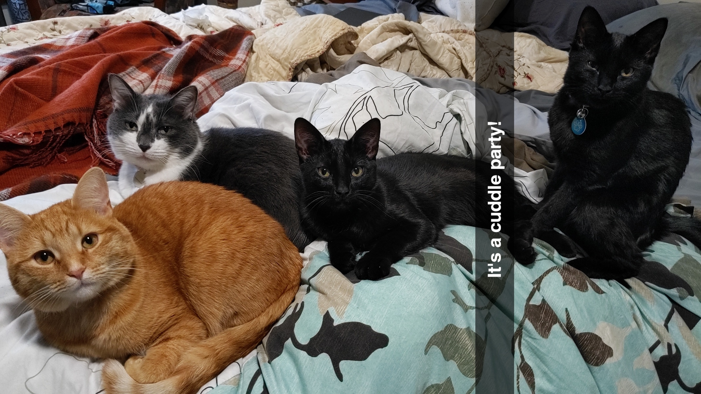

Hi!
My name is Shea Hauenstein and I am from the smallest town you've never heard of, Dola, Ohio. I grew up there with my dad, mom and two brothers. Living in the middle of nowhere means two things one, we had every animal you can think of growing up: cats, dogs, birds, chickens, rabbits, we even had a hamster named Tutter and two There was no real internet or connection to the outside world unless you watched the TV or went to the library... the 90s sucked. My parents always did their best to keep us out of trouble though and we were always at the library where my dad was a library board member. If you didn't guess I read A LOT, and we were always renting out the computers while we waited for dad to get things done before I went to dance class. We traveled a lot and went camping most summers hunting for blue mushrooms while hiking different trails. During high school, I was in Band, Choir, (I somehow found out cheerleading is not what everyone thinks it is...) & Track and went to state my junior and senior year.

When I graduated from Hardin Northern High School, I traveled up north to Bowling Green State University and majored in Education with two minors in English and Creative Writing. I have always been a good student and thought it would be the right career choice for me. I found friends on campus, joined clubs, studied hard got good grades, and I even studied abroad to England for 6 months during my Junior year - it was a once in a life time chance and I loved every minute of it.

In the Fall of 2015 I graduated with a degree in Education, but I was never able to pass my certification test to secure my licensure. For eight years, I spent so much time studying trying pass my certification test, finding subbing, coaching, serving and other odd jobs to help me get by and make ends meat. Until I met my husband, I never really had a reason to pursue anything other than my dream of teaching, but when things started to get more serious between the two of us I realized that love would not keep the lights on and I would need to pursue another career to take care of our future and current family (aka our four fur babies Huxley, Maggie, Ernie, & Virginia).

I came across coding one day when I was a long-term substitute at Fostoria High School. The principal had asked me to fill in as a long-term substitute again the next year as the technology teacher. I wasn't sure what I was signing on for, but I knew it was a secure job for another year and I took it. I immeadiately called up a friend to ask her what she did in her classroom and how I should prepare; she sent me to code.org and said this was great place to start for the 7th graders. I took my time learning different lessons from code.org each week and I would learn the material a week or two before I would teach it to my class; it was a lot of work, but I enjoyed every minute of it. It was my favorite class that I had taught so far. After that school year, I knew I no longer wanted to pursue teaching. After some digging around, some soul searching, marrying my husband and a 9 month hiatus from teaching, I had finally decided that I wanted to pursue a career in Software Engineering. Hopefully, in doing so I am able to make you a part of my journey as I take my next steps in my career.
"So throw away your baggage and go forward" - Aldos Huxley